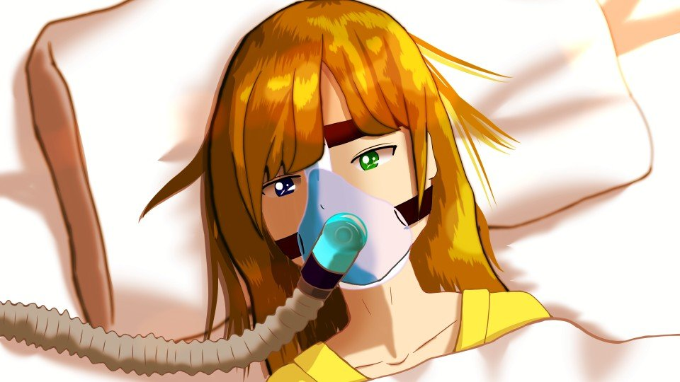
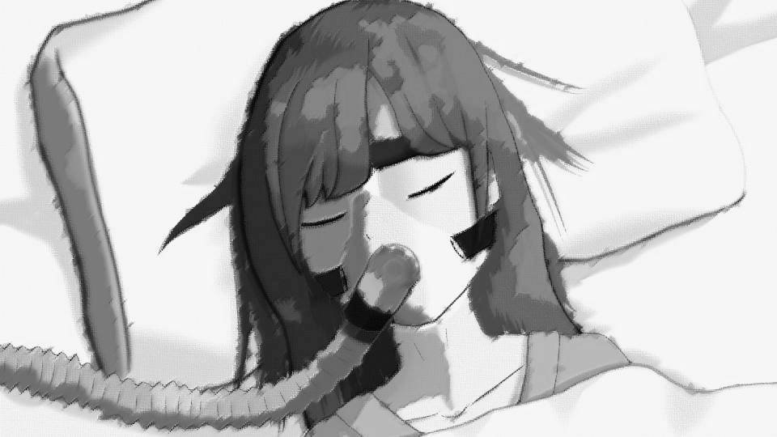
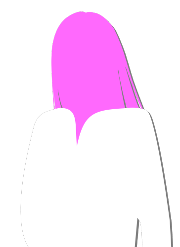

会いに来たよ。
――四月八日 午前6時
私は、麻酔で眠っている夏菜ちゃんのそばにいた。
四月八日の朝日がうっすらと病室に差し込んできた。
私は、麻酔で眠っている夏菜ちゃんのそばにいた。
四月八日の朝日がうっすらと病室に差し込んできた。

――5時間前の四月八日 午前1時
あの後、すぐに夏菜ちゃんは新村先輩のお母さんの車で病院に運ばれ、現場には警察と救急が駆けつけた。
住人たちは、夏菜ちゃんに応戦している最中に倒れ込み、動かなくなった。
あの後、すぐに夏菜ちゃんは新村先輩のお母さんの車で病院に運ばれ、現場には警察と救急が駆けつけた。
住人たちは、夏菜ちゃんに応戦している最中に倒れ込み、動かなくなった。
幸太郎さんとチガ姉はその場で死亡。
住人たちは全員の首に深い裂傷があり、それが致命傷で死亡した。
つまり、夏菜ちゃんが全員に止めを刺したのだ。
古郡先輩の両親は、傷は深いものの、致命傷は負っていなかった。
住人たちは全員の首に深い裂傷があり、それが致命傷で死亡した。
つまり、夏菜ちゃんが全員に止めを刺したのだ。
古郡先輩の両親は、傷は深いものの、致命傷は負っていなかった。

「痛い！ 痛いよ！ エリ姉……！」
病院に向かう間、夏菜ちゃんはその激痛に叫び、のた打ち回っていた。
次第に薬の鎮痛効果が切れ、耐え難い苦痛が10歳の女の子を苦しめていた。
私は夏菜ちゃんを必死に抱きしめた。
大丈夫――怖くないから。
私がついてるから。
病院に向かう間、夏菜ちゃんはその激痛に叫び、のた打ち回っていた。
次第に薬の鎮痛効果が切れ、耐え難い苦痛が10歳の女の子を苦しめていた。
私は夏菜ちゃんを必死に抱きしめた。
大丈夫――怖くないから。
私がついてるから。
夏菜ちゃんの脇腹からあふれる鮮血が、私の服をどんどん死の色で染め上げていった。
私には分かった。
この出血では、助かる見込みはない。
私には分かった。
この出血では、助かる見込みはない。
次第に呼吸が浅くなり、病院に着く頃には夏菜ちゃんはのた打ち回ることもせず、叫ぶこともせず。
弱弱しい呼吸のまま、手術室へ運ばれていった。
弱弱しい呼吸のまま、手術室へ運ばれていった。

――四月八日 午前1時半
手術室の赤いランプが灯った。
私はランプの見える椅子にじっと座っていた。
夏菜ちゃんが私たちを守ろうとして―― 自分を犠牲にして私たちを助けるために―― 迷うことなく、ドローガを自分の腕に突き刺した。
手術室の赤いランプが灯った。
私はランプの見える椅子にじっと座っていた。
夏菜ちゃんが私たちを守ろうとして―― 自分を犠牲にして私たちを助けるために―― 迷うことなく、ドローガを自分の腕に突き刺した。
私たちを無傷で助けられる自信があったのだろうか。
それとも、もうあの時自分が犠牲になるつもりだったのだろうか。
私は前者だと思いたい。
夏菜ちゃんが自己犠牲の心でドローガを使ったのだったら――あまりにも辛すぎる。
それとも、もうあの時自分が犠牲になるつもりだったのだろうか。
私は前者だと思いたい。
夏菜ちゃんが自己犠牲の心でドローガを使ったのだったら――あまりにも辛すぎる。
手術が終わるまでの間、私は睡魔に襲われることもなく、ただただ奇跡が起こるよう、祈っていた。
私は神様も、幽霊も、来世も信じない人間だ。
でもこの時ばかりは、神様の存在を信じたかった。
いや…… 逆だ。
神様の存在を本気で否定したかった。
私は神様も、幽霊も、来世も信じない人間だ。
でもこの時ばかりは、神様の存在を信じたかった。
いや…… 逆だ。
神様の存在を本気で否定したかった。
夏菜ちゃんに与える試練にしては、あまりにも理不尽だ。
神様が与えるのであれば……あまりにも理不尽だ。
だけど、私は心の中で祈り続けていた。
試練なら……試練なら乗り越えられるはずですよね。
お願いします、夏菜ちゃんを助けてください……！
神様が与えるのであれば……あまりにも理不尽だ。
だけど、私は心の中で祈り続けていた。
試練なら……試練なら乗り越えられるはずですよね。
お願いします、夏菜ちゃんを助けてください……！
私の心の中では、そんな矛盾した祈りと否定が渦巻いていた。

――四月八日 午前5時
手術室のランプが消え、夏菜ちゃんが出てきた。
手術はしたものの、お腹の傷は深く、助かる見込みはないと……。
集中治療室へ移送されることなく、個室へ移された。
私たちが夏菜ちゃんの最期をそばで看取れるようにと……。
手術室のランプが消え、夏菜ちゃんが出てきた。
手術はしたものの、お腹の傷は深く、助かる見込みはないと……。
集中治療室へ移送されることなく、個室へ移された。
私たちが夏菜ちゃんの最期をそばで看取れるようにと……。


「五島、ほら……」
新村先輩が手渡してくれたのは、水で濡らしたハンカチ。
「顔、拭けよ」
言われるがままハンカチで顔をなでると、ハンカチに赤いにじみ。
夏菜ちゃんの血が、顔についていたようだ。
車の中で夏菜ちゃんを抱きしめていたから、私の服も血まみれだ。
新村先輩が手渡してくれたのは、水で濡らしたハンカチ。
「顔、拭けよ」
言われるがままハンカチで顔をなでると、ハンカチに赤いにじみ。
夏菜ちゃんの血が、顔についていたようだ。
車の中で夏菜ちゃんを抱きしめていたから、私の服も血まみれだ。
あまりにもひどい出血。
この小さな身体に、これほどの血があったのかと思うほどに、私の服は血で濡れていた。
それでもまだ、夏菜ちゃんは生きてくれている。
この小さな身体に、これほどの血があったのかと思うほどに、私の服は血で濡れていた。
それでもまだ、夏菜ちゃんは生きてくれている。
「五島……少し休めよ……。全然寝てないだろ？」
夏菜ちゃんの手術中、新村先輩は古郡先輩についていた。
古郡先輩の怪我は大したことないらしく、新村先輩もこちらに来てくれた。
古郡先輩は今、お父さんたちと同じ病室にいる。
エリカちゃんと先輩のお母さんは警察で事情聴取。
夏菜ちゃんの手術中、新村先輩は古郡先輩についていた。
古郡先輩の怪我は大したことないらしく、新村先輩もこちらに来てくれた。
古郡先輩は今、お父さんたちと同じ病室にいる。
エリカちゃんと先輩のお母さんは警察で事情聴取。
「新村先輩こそ、休んでください。
私……最後まで夏菜ちゃんのそばにいてあげたい……」
その時、新村先輩のスマホが鳴った。
「警察からだ。出てくるよ」
新村先輩は病室から出ていった。
その時、新村先輩のスマホが鳴った。
「警察からだ。出てくるよ」
新村先輩は病室から出ていった。
私は青白い夏菜ちゃんの顔をなでた。
最初は、ちょっとうっとうしい子だなあと思った。
でもそれは、お母さんがいない悲しさと、同年代の子供が荒田集落にはいないという寂しさがあったから――。
生まれた時から、みんなに愛されていたお母さんがいないって言うのは、夏菜ちゃんくらいの年齢が1番寂しいのだろう。
最初は、ちょっとうっとうしい子だなあと思った。
でもそれは、お母さんがいない悲しさと、同年代の子供が荒田集落にはいないという寂しさがあったから――。
生まれた時から、みんなに愛されていたお母さんがいないって言うのは、夏菜ちゃんくらいの年齢が1番寂しいのだろう。
「マ……
マ……」
夏菜ちゃんが話した……！？
「夏菜ちゃん聞こえる！？」
私は夏菜ちゃんの手を握った。
すると、弱弱しい力で握り返してきた。
夏菜ちゃんが話した……！？
「夏菜ちゃん聞こえる！？」
私は夏菜ちゃんの手を握った。
すると、弱弱しい力で握り返してきた。

「エリ……姉……？」
「そうだよ！ 夏菜ちゃん、助かったんだよ！」
「エリ姉……ずっとそばに……いてくれたの？」
「そうだよ！ 夏菜ちゃん、助かったんだよ！」
「エリ姉……ずっとそばに……いてくれたの？」
「そうだよ！ だって私、夏菜ちゃんのお姉さんでしょ！？」
「ありがとう……。 ママが…… ずっとそばにいてくれる夢見てた……。 エリ姉が……ママみたいに優しいから…… そんな夢、見れたんだよね」
「ありがとう……。 ママが…… ずっとそばにいてくれる夢見てた……。 エリ姉が……ママみたいに優しいから…… そんな夢、見れたんだよね」
これは試練を乗り越えたということなのだろうか。
それとも、神様が最後の最後で与えてくれた情けなのだろうか。
いや、この際どちらでもいい！
もう夏菜ちゃんの声を聞けないと思っていたのだから。
最後の情けだとしても、神様にひっそりと感謝した。
それとも、神様が最後の最後で与えてくれた情けなのだろうか。
いや、この際どちらでもいい！
もう夏菜ちゃんの声を聞けないと思っていたのだから。
最後の情けだとしても、神様にひっそりと感謝した。
「夏菜ちゃん……ごめんね。こんな頼りないお姉ちゃんで……」
夏菜ちゃんは私の言葉に表情を作ろうとしていたが、その力も残されていないようだ。
私の言葉を、ぼやけた意識の中でどう受け止めているのだろうか。
夏菜ちゃんは私の言葉に表情を作ろうとしていたが、その力も残されていないようだ。
私の言葉を、ぼやけた意識の中でどう受け止めているのだろうか。
「エリ姉……
私……
最後まで……
寂しかった……。
だけど……今は……
エリ姉がそばにいてくれて……寂しくない……」
「ねえ聞いて！ 私、夏菜ちゃんと行きたいところがたくさんあるの！ 元木町はね、桜がたくさんあって、とてもきれいなところだよ！ 元気になったら…… 元気になったら……！ 一緒に…… ね？」
「ねえ聞いて！ 私、夏菜ちゃんと行きたいところがたくさんあるの！ 元木町はね、桜がたくさんあって、とてもきれいなところだよ！ 元気になったら…… 元気になったら……！ 一緒に…… ね？」

励ましている私の目から涙が止まらなかった。
励ましているのに…… 私が泣いてどうするの……！
それをごまかそうと、たくさん夏菜ちゃんに話しかけた。
夏菜ちゃんが元気になったら…… そんな 儚 い夢を思いつくままに語りかけた。
励ましているのに…… 私が泣いてどうするの……！
それをごまかそうと、たくさん夏菜ちゃんに話しかけた。
夏菜ちゃんが元気になったら…… そんな 儚 い夢を思いつくままに語りかけた。
だが私の思いが空回ったのか、夏菜ちゃんの目からしずくが垂れ落ちた。
どうして……どうして夏菜ちゃんも？
私が泣いているから？
だったら泣かない！ 泣かないから……！
だからもう一度だけ……笑ってみせてよ……！
どうして……どうして夏菜ちゃんも？
私が泣いているから？
だったら泣かない！ 泣かないから……！
だからもう一度だけ……笑ってみせてよ……！
「エリ……
姉……」
「だ…… い…… す…… き……」
「だ…… い…… す…… き……」
「五島、もうすぐばあちゃんが――」
新村先輩の声は、抑揚のない心電図でかき消された。
夏菜ちゃんの手の力がなくなっても、私はその手をずっと握っていた。
離したくなかった。
まだ体温があるうちに、夏菜ちゃんの生を最後の最後まで確かめていたかった。
新村先輩の声は、抑揚のない心電図でかき消された。
夏菜ちゃんの手の力がなくなっても、私はその手をずっと握っていた。
離したくなかった。
まだ体温があるうちに、夏菜ちゃんの生を最後の最後まで確かめていたかった。
「新村先輩……私……ちゃんとお姉ちゃんになれましたかね……？」
「五島……！」
夏菜ちゃんの手を握ったままの私を、新村先輩は後ろから抱きしめた。
「お前もチガ姉も……夏菜にとって最高のお姉さんだよ……」
「五島……！」
夏菜ちゃんの手を握ったままの私を、新村先輩は後ろから抱きしめた。
「お前もチガ姉も……夏菜にとって最高のお姉さんだよ……」
「お姉ちゃんになるって……大変なんですね……。
私、ノリでお姉ちゃんになってあげるなんて言いながら……それらしいこと、何もしてあげられなかった」
「お前……。 もっと大事なことがあるだろ……。 夏菜の顔、見てみろよ。 苦しそうでも、寂しそうでもないだろ……。 お前がそばにいてあげたからだろ？ お前だからできたことだろ……？」
「お前……。 もっと大事なことがあるだろ……。 夏菜の顔、見てみろよ。 苦しそうでも、寂しそうでもないだろ……。 お前がそばにいてあげたからだろ？ お前だからできたことだろ……？」

夏菜ちゃんの顔は、女神様のように穏やかだった。
私がそばにいたからなのだろうか。
それを知る由はない――。
私がそばにいたからなのだろうか。
それを知る由はない――。
だけど、新村先輩の言うとおりだとしたら……私は夏菜ちゃんに会えてよかった。
お姉ちゃんになれてよかった。
私はそっと夏菜ちゃんの手を離した。
お姉ちゃんになれてよかった。
私はそっと夏菜ちゃんの手を離した。
バイバイ。
私も……夏菜ちゃんが大好きだよ。
私も……夏菜ちゃんが大好きだよ。

――祀耀800年八月一日
私は1人、無人と化した荒田集落に来ていた。
古郡先輩にも新村先輩にも言わず、1人でこの地を訪れた。
1人であの長い山道を登り―― あの場所に来た。
私は1人、無人と化した荒田集落に来ていた。
古郡先輩にも新村先輩にも言わず、1人でこの地を訪れた。
1人であの長い山道を登り―― あの場所に来た。
やっぱり1日で往復する計画は無理があったかな……。
まだ15時だというのに、ひぐらしが鳴き始めている。
いざとなったら、新村本家の掃除でもして、一晩だけ寝かせてもらおうって思っている。
まだ15時だというのに、ひぐらしが鳴き始めている。
いざとなったら、新村本家の掃除でもして、一晩だけ寝かせてもらおうって思っている。

夏菜ちゃんの秘密基地には、真夏の太陽がまぶしく突き射していた。
秘密基地の隅には、ジュースの空き缶やお菓子の空き箱が、あの日のまま取り残されている。
私はそのそばにひまわりの花を添え、手を合わせた。
秘密基地の隅には、ジュースの空き缶やお菓子の空き箱が、あの日のまま取り残されている。
私はそのそばにひまわりの花を添え、手を合わせた。
「夏菜ちゃん……
11歳のお誕生日、おめでとう」
そしてそのそばに、5月にとった茅萱の花を添えた。
「チガ姉……夏菜ちゃんが私の妹なら、チガ姉も私のお姉さんだよね」
そしてそのそばに、5月にとった茅萱の花を添えた。
「チガ姉……夏菜ちゃんが私の妹なら、チガ姉も私のお姉さんだよね」
私はあの日のように大の字になって寝転がり、岩の裂け目から射してくる日光を眺めた。
人のいない荒田の山には、気の早いひぐらしの声がけたたましくこだます。
ここはとても涼しい。
人のいない荒田の山には、気の早いひぐらしの声がけたたましくこだます。
ここはとても涼しい。
夏菜ちゃんは嫌なことがあったら、1人でここに来ると言っていた。
ここでお母さんに会えるって。
夏菜ちゃんとチガ姉は、私のこと、向こうから見ているだろうか。
私は目を閉じ、あの日のことを思い返した。
ここでお母さんに会えるって。
夏菜ちゃんとチガ姉は、私のこと、向こうから見ているだろうか。
私は目を閉じ、あの日のことを思い返した。

たくさんの謎を残したまま、荒田集落は滅びてしまった。
しかし私には、ある仮説が浮かんでいた。
しかし私には、ある仮説が浮かんでいた。
新村先輩のお父さんの血を浴びて、危険予知を得た古郡先輩。
ドローガと言われる荒田集落にしかない未知の薬物。
どこぞの団体にほとんどが持ち去られたという、荒田固有種の桜。
新村本家にある死にかけの桜。
そして――首を切られたサクラさん。
ドローガと言われる荒田集落にしかない未知の薬物。
どこぞの団体にほとんどが持ち去られたという、荒田固有種の桜。
新村本家にある死にかけの桜。
そして――首を切られたサクラさん。
そう考えると、四月に荒田集落の人間が全員死ぬ理由。
桔梗さんが四月に死ななかった理由。
自殺が多発した理由。
それらまで、全てがつながってくる。
桔梗さんが四月に死ななかった理由。
自殺が多発した理由。
それらまで、全てがつながってくる。
しかし仮説を立て、謎を解き明かしたところで……夏菜ちゃんも、チガ姉も戻って来ない。
私には数時間だけ、血のつながらない妹がいた。
祖母と孫ほど歳の離れた友達ができた。
私の荒田集落での思い出は……それだけで十分。
十分なのに……。
私には数時間だけ、血のつながらない妹がいた。
祖母と孫ほど歳の離れた友達ができた。
私の荒田集落での思い出は……それだけで十分。
十分なのに……。
だけど……私はどうしても考えてしまう。
どうすればあの惨劇を回避できたのか。
全てを先回りして考える『未知の能力』を持つ幸太郎さんに対抗する手立ては――あの状況では全くなかった。
どうすればあの惨劇を回避できたのか。
全てを先回りして考える『未知の能力』を持つ幸太郎さんに対抗する手立ては――あの状況では全くなかった。
もし本当に古郡先輩と同じような直感が幸太郎さんにあったとしたら、避けることなんて不可能だった。
それともう1つ。
チガ姉と新村先輩のお母さんの2人が、幸太郎さんを犯人と疑っていた経緯がどうにもしっくり来ない。
理由は、鉈とメイスで狩りをさせていたことがきっかけ。
それでチガ姉と夏菜ちゃんは殺人術を仕込まれていると気づいたと。
でも、それで幸太郎さんを犯人と考えるなんて、ちょっと無理があるのではないか。
チガ姉と新村先輩のお母さんの2人が、幸太郎さんを犯人と疑っていた経緯がどうにもしっくり来ない。
理由は、鉈とメイスで狩りをさせていたことがきっかけ。
それでチガ姉と夏菜ちゃんは殺人術を仕込まれていると気づいたと。
でも、それで幸太郎さんを犯人と考えるなんて、ちょっと無理があるのではないか。
つまり、チガ姉と新村先輩のお母さんは何か隠しているのではないか、と私は疑っている。
チガ姉が死んでしまった今、新村先輩のお母さんに聞くしかないのだが……。
しかし、それを聞いたところで、今さらどうにかできるものでもない。
チガ姉が死んでしまった今、新村先輩のお母さんに聞くしかないのだが……。
しかし、それを聞いたところで、今さらどうにかできるものでもない。
チガ姉は、まだ何か知っていたはずだ。
何か隠していたはずだ。
いや、それだけではないのかもしれない。
その気になれば、チガ姉が真犯人であると言う仮説すら立てられるが――。
それももう、不毛な考えでしかない。
何か隠していたはずだ。
いや、それだけではないのかもしれない。
その気になれば、チガ姉が真犯人であると言う仮説すら立てられるが――。
それももう、不毛な考えでしかない。
そもそも論ではあるけど、私たちが荒田集落に足を踏み入れた時点で、こうなることは決まっていた。
だけど古郡先輩は、私たちが荒田集落へ行かなくてはならないという予言をしていた。
どこかで何かがおかしくなってしまったのだ。
だけど古郡先輩は、私たちが荒田集落へ行かなくてはならないという予言をしていた。
どこかで何かがおかしくなってしまったのだ。
原因はおそらく、古郡先輩の両親が荒田集落に近づいたこと。
もしそれを避けることができていたなら、もっと違った結末だったのかもしれない。
いや……絶対に違った結末だったはず。
こんな惨劇に古郡先輩が導いたとは、とても思えない。
もしそれを避けることができていたなら、もっと違った結末だったのかもしれない。
いや……絶対に違った結末だったはず。
こんな惨劇に古郡先輩が導いたとは、とても思えない。
女ケ沢市で起ころうとしていた殺人事件。
全てはあそこがきっかけ。
――いや……古郡先輩が四月病と呼ばれる特異体質になった原因。
それは、新村栄一郎さんの血液を浴びたこと。
いや……これでもない……。
全てはあそこがきっかけ。
――いや……古郡先輩が四月病と呼ばれる特異体質になった原因。
それは、新村栄一郎さんの血液を浴びたこと。
いや……これでもない……。
もっと前だ。
新村先輩のお父さん――新村栄一郎さんにその昔、何かがあったはずだ。
古郡先輩があの能力を手に入れた経緯も、そこに隠れているはず。
そしてきっと同じことが――古郡先輩と同じようにサクラさんにもあったはず。
これは仮説ではなく、勘だ……。
新村先輩のお父さん――新村栄一郎さんにその昔、何かがあったはずだ。
古郡先輩があの能力を手に入れた経緯も、そこに隠れているはず。
そしてきっと同じことが――古郡先輩と同じようにサクラさんにもあったはず。
これは仮説ではなく、勘だ……。
そしてもう1つ、私には気になることがあった。
幸太郎さんは、荒田駅前で1度も『殺す』とか『死ね』ということは言わなかった。
さらに古郡先輩を逃すまいともしていた。
異常なまでに古郡先輩に執着していた幸太郎さんには、一体何の目的があったのだろうか。
幸太郎さんは、荒田駅前で1度も『殺す』とか『死ね』ということは言わなかった。
さらに古郡先輩を逃すまいともしていた。
異常なまでに古郡先輩に執着していた幸太郎さんには、一体何の目的があったのだろうか。
結局私が追い求めていた『結』は闇の中。
『結』があいまいだから、『起』も見えるはずがない。
どうしたらよかったのだろうか。
『結』があいまいだから、『起』も見えるはずがない。
どうしたらよかったのだろうか。
少なくとも、この惨劇を回避するためには、10年前の時点で何かしらの手を打っておく必要があった。
ほんの些細なことでもいい。
ほんのちょっとしたことであっても……。
そうすれば――。
ほんの些細なことでもいい。
ほんのちょっとしたことであっても……。
そうすれば――。
「――」
何この音……！
ふいに鼓膜を破かんばかりの轟音が一帯に響き渡る。
ふいに鼓膜を破かんばかりの轟音が一帯に響き渡る。
あわてて起き上がり、秘密基地から出る。
この異常な音の原因を探ろうと周辺を見回すが、まぶしい太陽の光が、暗闇に慣れた目を強く刺激する。
手で太陽を隠すと、周囲の様子が少しずつ見えてくる。
この異常な音の原因を探ろうと周辺を見回すが、まぶしい太陽の光が、暗闇に慣れた目を強く刺激する。
手で太陽を隠すと、周囲の様子が少しずつ見えてくる。
「え？」
次第に目が慣れ、視界に飛び込んでくる景色。
それが現実とは思えなかった。
なぜなら――。
次第に目が慣れ、視界に飛び込んでくる景色。
それが現実とは思えなかった。
なぜなら――。

「木が……枯れてる……？」
さっきここを通った時は、たくさんの木が立派な葉を付けていた。
それがほんの10分ほどの間に、まるで荒野のように葉は落ち、木が枯れている。
うるさかったひぐらしの声も先ほどの轟音もいつの間にか消え、周囲には弱い風の音と私の呼吸音だけが響く。
さっきここを通った時は、たくさんの木が立派な葉を付けていた。
それがほんの10分ほどの間に、まるで荒野のように葉は落ち、木が枯れている。
うるさかったひぐらしの声も先ほどの轟音もいつの間にか消え、周囲には弱い風の音と私の呼吸音だけが響く。
どうなっているの……？ 何が起きているの！？
私は急ぎ、集落の方へ走った。
足元には茶色く乾燥した木の葉が積もっている。
バリバリと踏み鳴らしながら、集落へ走る。
足元には茶色く乾燥した木の葉が積もっている。
バリバリと踏み鳴らしながら、集落へ走る。
「な……！？」
新村本家にあったもの。それは――。
新村本家にあったもの。それは――。

 video: 111.wmv
video: 111.wmv美しいと呼ぶにはあまりにも禍々しい桜の花。
枯れかけていたはずの桜の木が、季節外れの狂い咲きを見せつける。
枯れかけていたはずの桜の木が、季節外れの狂い咲きを見せつける。
video: 111.wmv狂い咲き――
これは冬の季語で、小春日和が続く日に、桜が春の到来を勘違いして桜を咲かせる現象だ。
しかし夏の狂い咲きとは、稀と呼ぶにはあまりにも……。
この桜の木って、本当に桜？
しかし夏の狂い咲きとは、稀と呼ぶにはあまりにも……。
この桜の木って、本当に桜？
video: 111.wmvそんな可能性が頭によぎるが――。
それを吹っ飛ばすほどの気配が、私のすぐ後ろに。
誰かが、私の後ろにいる。
無人のはずの、荒田集落に誰かがいる。
この桜と一緒に舞い込んできたのは、誰？
それを吹っ飛ばすほどの気配が、私のすぐ後ろに。
誰かが、私の後ろにいる。
無人のはずの、荒田集落に誰かがいる。
この桜と一緒に舞い込んできたのは、誰？
video: 111.wmv
「あなたが五島絵梨奈さんね。生前の夏菜がとてもお世話になったそうで」
「そ……そんな…… あり得ない……！」
「おめでとう五島絵梨奈さん。あなたには神使の資格があるの」
私は超常現象や幽霊なんて信じない。
あり得るとすれば、それらを想起させる科学的現象が超常現象と思わせているに過ぎない。
「そ……そんな…… あり得ない……！」
「おめでとう五島絵梨奈さん。あなたには神使の資格があるの」
私は超常現象や幽霊なんて信じない。
あり得るとすれば、それらを想起させる科学的現象が超常現象と思わせているに過ぎない。
video: 111.wmvじゃあ、目の前にあるものは何？
死体が動いている？
この人は、以前写真で見た新村サクラさん？
それを……この私に認めろと言うの？
死体が動いている？
この人は、以前写真で見た新村サクラさん？
それを……この私に認めろと言うの？
しかし、そんなことはきっと、彼女にとってどうでもいいのだ。
私は神使として、彼女たちの目的のために利用される。
もう、逃げることなどできないのだ。
だって…… 私はすでに大勢に囲まれているから。
私は神使として、彼女たちの目的のために利用される。
もう、逃げることなどできないのだ。
だって…… 私はすでに大勢に囲まれているから。
Read ✓ Next in this arc →